Platform Engineering Workshop in a Single Page
Open Code Quest Origins
Your mission today: equip a team of super developers to make them super hero developers using an Internal Developer Platform (IDP).
Your team
You are a team of 3 people working together with 2 roles:
-
Platform Engineer — sets up standards, integrations, and golden paths
-
Developer — consumes the platform to build, deploy, and run applications
Some parts are shared (one person drives, others follow), some are individual. You will explore 3 topics:
-
Design and deploy an Internal Developer Platform with Red Hat Developer Hub
-
Develop and deploy microservices using the platform you built
-
Iterate and improve the platform
Ready? Start with Module 1: Discovery.
Discovery
Objectives
-
Understand the challenges developers face and why an Internal Developer Platform matters
-
Discover Red Hat Developer Hub and how it helps teams onboard and ship faster
-
Get ready for the hands-on labs ahead
The scenario
Open Code Quest Organization is a superhero developer company. The team is growing fast but working in silos, which causes:
-
Difficulty knowing who is doing what
-
Slow onboarding of new team members
-
No reuse of existing artifacts
-
No developer self-service
The solution: an Internal Developer Platform (IDP) built with Red Hat Developer Hub.
What is Red Hat Developer Hub?
Red Hat Developer Hub is a unified, open platform that reduces cognitive load for developers. It extends the Backstage project with OpenShift integration, enterprise RBAC, and dynamic plugins.
What you will do in this workshop
-
Design an Internal Developer Platform — integrate SSO (Keycloak), SCM (GitLab), and GitOps (Argo CD) with Red Hat Developer Hub
-
Build software templates and golden paths for your team
-
Develop microservices using the platform you created
-
Iterate and improve the platform with monitoring, observability, and orchestration
Let’s start building. Proceed to Module 2: Design the Internal Developer Platform.
Module 2: Design the Internal Developer Platform
Overview
Red Hat Developer Hub is based on the Backstage project for building internal developer portals. This project was donated to the CNCF by Spotify in 2020. Platform engineers can use Red Hat Developer Hub to build internal developer portals. Doing so involves integrating Red Hat Developer Hub with various data sources, cataloging existing software components, infrastructure, and resources, configuring single sign-on, and more.
In this module, you’ll learn how to install and bootstrap an instance of Red Hat Developer Hub to create a minimum viable internal developer portal for a select group of developers within your organization.
The initial use cases for your developer portal are:
-
Self-service discovery of software components and dependencies.
-
Visibility into CI/CD pipelines.
-
Hosting documentation.
-
Scaffolding projects that adhere to organizational best practices.
Module Objectives
To meet the previous use cases, configure Red Hat Developer Hub (RHDH) to connect with your existing tools and infrastructure. For instance, if you use OpenShift Pipelines for CI, set up RHDH to integrate with your OpenShift cluster to fetch and display data used to perform Pipeline Runs.
The value of an internal developer portal depends on the effort and care put into it by platform engineers and developers
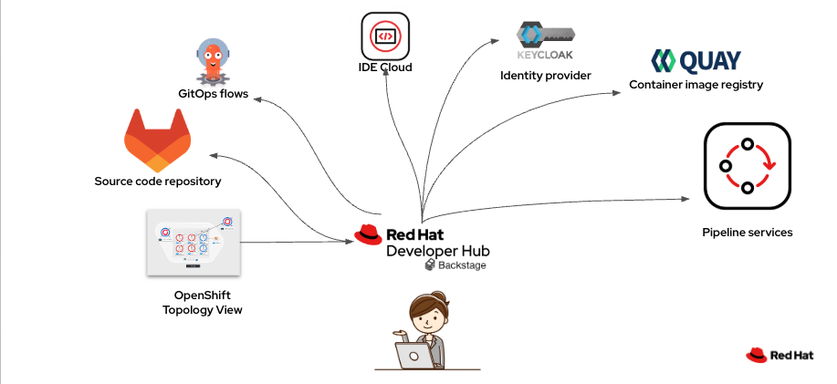
Your workshop environment has been preconfigured with the following capabilities :
-
An Internal Developer Portal
-
An Identity Provider
-
A Code Source Manager
-
A CI/CD Platform
-
A container Platform
For this workshop, we’ll assume that your organization has standardized on and set these tools. It’s your objective as the platform engineer to integrate them with Red Hat Developer Hub.
In this module, you’ll:
-
Deploy the Internal Developer Portal
-
Integrate Red Hat Developer Hub with the dependent services
-
Learn about Backstage Entities, e.g. Components, APIs, and Docs
-
Prepare the platform for developer onboarding :imagesdir: ../../assets/images
Introduction to Concepts
Red Hat Developer Hub, and internal developer portals in general, can be thought of as a modular system where you aggregate and display data related to the software within an organization.
The core features of Red Hat Developer Hub are:
-
Software Catalog
-
Software Templates
-
TechDocs
-
Kubernetes Integration
-
Dynamic Plugins
-
Role-Based Access Control (RBAC)
Software Templates
Software Templates have been referred to as "Golden Paths" in the past. These templates are designed and curated by platform engineers to provide a starting point for new software components that adhere to best practices within an organization. Templates can also be used to patch and update existing source code repositories, and provide general automation and self-service for developer chores.
We’ll dive deeper into Software Templates in another module!
Software Catalog
The Software Catalog is a centralised asset tracker for all of the softwares in your organization. It stores and tracks Entities reprensenting:
-
Components: Units of software, e.g. microservices, websites, libraries.
-
Resources: Databases, S3 buckets, brokers.
-
APIs: Represent interfaces such as REST, gRPC, and GraphQL APIs.
-
Systems: Collections of Components that make up an application or platform.
-
Domains: A higher-level grouping of Systems and Entities.
Feel free to explore it https://backstage.io/docs/features/software-catalog/references/
Entities are typically imported and synchronized in one of three ways:
-
Using plugins that automatically find and import them.
-
Manually registering entities via the UI by providing a link to a repository containing them.
-
Declaring them in the Backstage configuration.
In all cases, the Entities will be synchronized on a regular schedule to ensure the information in the Software Catalog remains up to date. You’ll utilize all three methods throughout this workshop.
Plugins
Backstage, and by extension Red Hat Developer Hub, supports the concept of plugins. Utilizing plugins is a critical part of enabling the desired functionality for your IDP.
Currently, running an instance of Backstage and adding plugins to upstream Backstage requires a platform engineer to:
The ability to load plugins dynamically is an added value feature included in Red Hat Developer Hub that’s currently unavailable in upstream Backstage - you can read more about it in the Red Hat Developer Hub documentation. The dynamic plugin support in Red Hat Developer Hub means that new plugins can be installed without the need to edit code and rebuild the Red Hat Developer Hub container image.
You’ll see dynamic plugins in action shortly.
Understanding the Red Hat Developer Hub Configuration
The app-config.yaml is a concept file to define configuration values
A simple Backstage configuration file looks similar to the following example:
# Define authentication configuration (this example is for testing only!)
auth:
providers:
guest:
dangerouslyAllowOutsideDevelopment: true
# Static configuration for the Software Catalog. Can be used to import
# entities on startup, and restrict the entity types that can be imported.
catalog:
rules:
- allow: [Component, System, API, Resource, Location, Template]
locations:
- type: file
target: https://gitlab-gitlab.{openshift_cluster_ingress_domain}/org-name/repo-name/entities.yaml
# A configuration for the TechDocs plugin. This example instructs the plugin to
# build documentation at runtime, instead of pulling prebuilt HTML from S3
techdocs:
builder: 'local'
publisher:
type: 'local'
generator:
runIn: localSince you’ll be using the Red Hat Developer Hub Helm Chart to install and manage your internal developer portal, your configuration is nested under an upstream.backstage.appConfig property in a Helm Values file. View your configuration by visiting your rhdh/developer-hub-config repository on GitLab.
Your workshop environment has been pre-configured such that this repository in GitLab is continuously monitored and deployed using OpenShift GitOps. We’ll cover this in more detail shortly.
With that out of the way, let’s get to work on configuring your instance of Red Hat Developer Hub!
Red Hat Developer Hub Deployment
First step in Red Hat Developer Hub
Pick the chosen one !
| This is a Shared part. It means, one person will be able to go through those steps. The work accomplished will be useful for everyone! |
-
User1 is : user1
-
User2 is : user2
-
User3 is : user3
Deploying Red Hat Developer Hub
Platform Engineers can deploy Red Hat Developer Hub on OpenShift using the Operator or Helm Chart. Both of these installation methods are outlined in the Red Hat Developer Hub documentation. In this lab, you’ll use the Helm Chart to deploy and manage your instance of Red Hat Developer Hub. The source code for this Helm Chart can be found at openshift-helm-charts repository on GitHub.
Using GitOps to Manage Red Hat Developer Hub
The deployment of Red Hat Developer Hub is kept up to date using a GitOps workflow, as illustrated below.
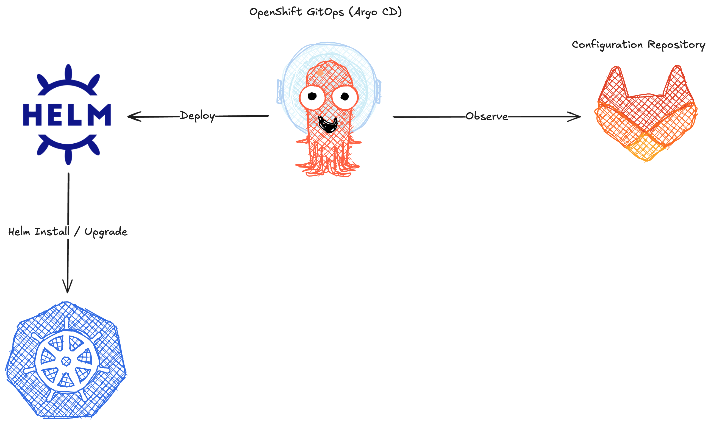
Curious about GitOps deployment ?
The instance of OpenShift Container Platform used in this workshop environment has been preconfigured with OpenShift GitOps (Argo CD).
Since this isn’t a GitOps-focused workshop, we’ve set up the basic GitOps workflow ahead of time. Specifically, we’ve pre-created a rhdh-bootstrap Application in OpenShift GitOps - you can view this by clicking the link and "log in via OpenShift" as
mon-user-pe/sWtbXGQy`
| GitOps is the practice of automating application deployment using Git repositories as the "source of truth" for an infrastructure as code (IaC) for the deployment configuration. The Git repository contains declarative configuration, typically in YAML format, that describes the desired deployment state, and a GitOps tool such as OpenShift GitOps ensures the application is deployed according to the configuration. Drifts from the configuration can automatically be patched. |
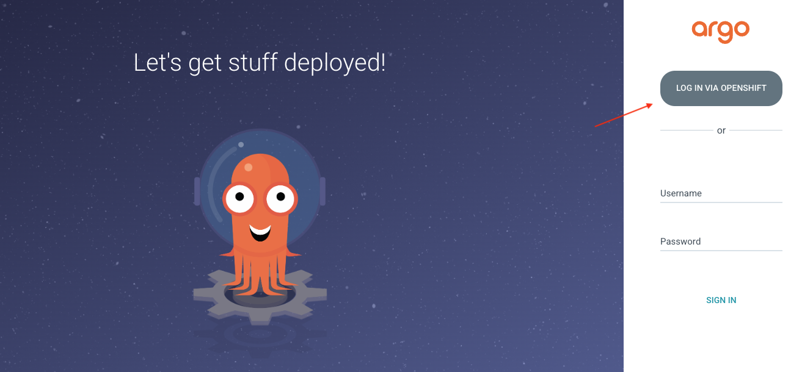
The Argo CD Application creates Secrets, ConfigMaps, and another Argo CD Application named https://openshift-gitops-server-openshift-gitops.apps.cluster-fs6v5.fs6v5.sandbox613.opentlc.com/applications/rhdh-team1-bootstrap. The ArgoCD Argo CD Application deploys Red Hat Developer Hub using the Helm Chart. The configuration values passed to the Helm Chart are sourced from the rhdh/developer-hub-config/values.yaml file in GitLab. OpenShift GitOps will detect changes to this file and redeploy Red Hat Developer Hub in response. You can see these two sources in the Details tab of the backstage Application as shown.
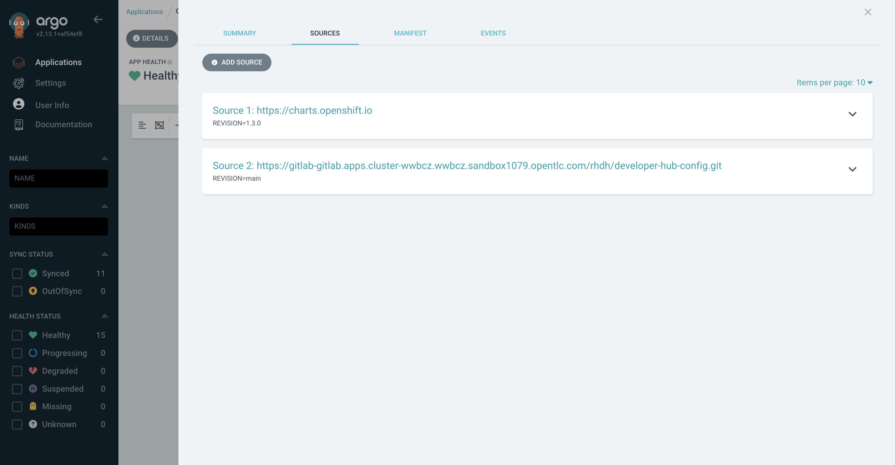
Understand how GitOps is Working
The starting point is the installation of the Internal Developer Portal, Red Hat Developer Hub. All resources has been set to let the magic of GitOps run the installation. For the purpose of the workshop, you will do a minor change to trigger the installation.
Update the App Title of Red Hat Developer Hub
The configuration file of the Internal Developer Platform is located in a Gitlab repo.
✍️ Time to practise ✍️
-
Open this link
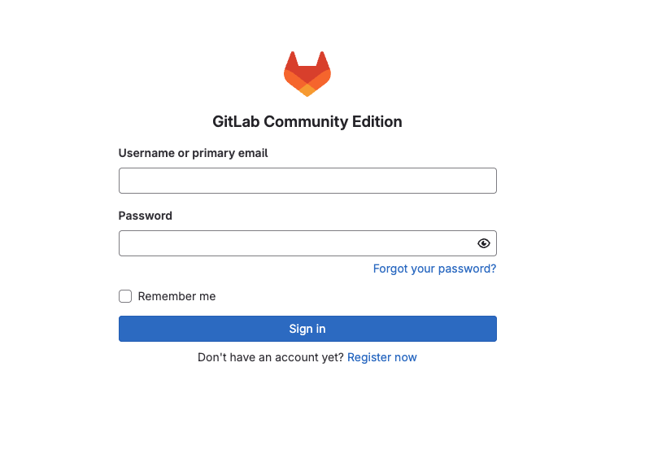
-
When prompted, log in as a Platform Engineer with
-
Username or primary email :
mon-user-pe -
Password :`sWtbXGQy`
-
Remember, it’s the same user, the platform engineer you have chosen who is performing actions also on Gitlab !
-
Select Edit > Edit single file.
-
Find the YAML surrounded by
--- APP TITLE ---and uncomment it by highlighting it and pressingCMD + /orCTRL + /.
|
If the keyboard shortcut to uncomment through the web browser doesn’t work , edit the piece of code in your local IDE and paste after ! |
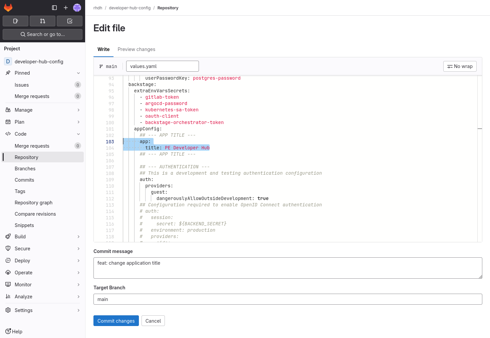
The uncommented part should look like :
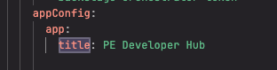
-
Scroll down and enter a commit message
feat: change application title. -
Click the Commit changes button.
Verify Internal Developer Portal is deployed
Let’s ensure that a new deployment of Red Hat Developer Hub is triggered and your new title is applied.
✍️ Time to practise ✍️
2 ways to do it:
-
Wait few minutes to let our GitOps service observes the change and trigger the installation
-
Trigger the refresh by yourself following those instructions:
-
Go to the Developer Hub Application in Argo CD
-
-
Click on Login via OpenShift
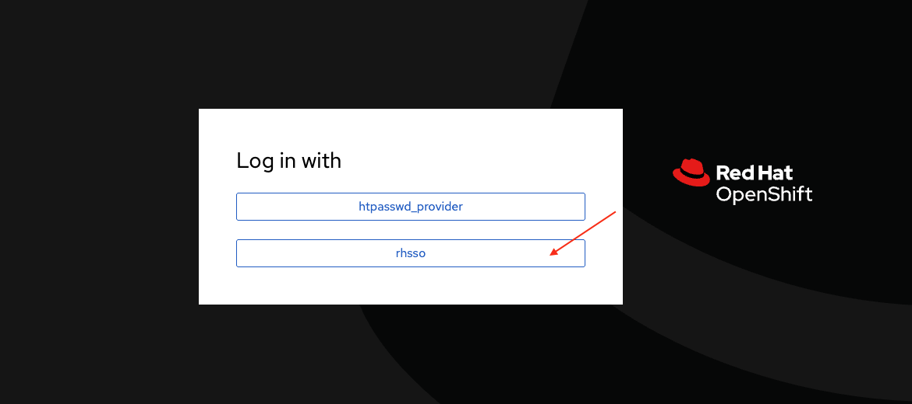
-
Click on rhsso
-
When prompted, log in as a Platform Engineer with
-
Username or primary email :
mon-user-pe -
Password :`sWtbXGQy`
-
-
Depending on your timing, it might already be progressing the latest sync, but if not, click the Refresh button. When the sync is in progress, you’ll see a new Pod starting - this Pod will run the latest version of your configuration.
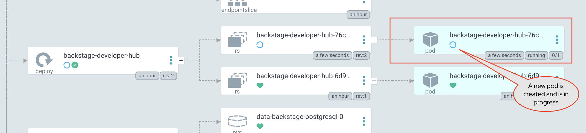
-
Once the new Pod has started, visit your Red Hat Developer Hub instance. You should see the new title PE Developer Hub in the page header.
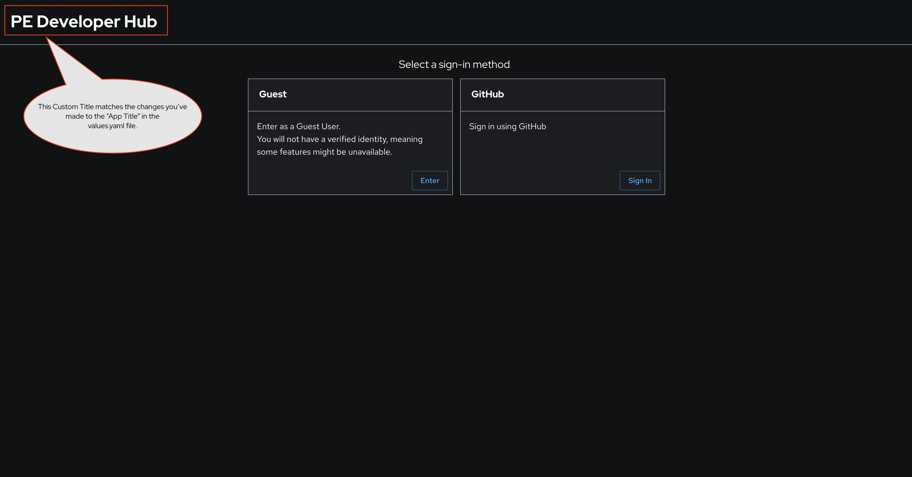
|
If the pod is ready but there is no change on Developer Hub UI, |
Get help here
Debug stuck deployment
The problem is the deployment of Red Hat Developer Hub has been performed on a cluster node different from the initial storage (PVC) location. To fix it, we will trigger a new deployment. To do so, go to backstage project on OpenShift.
-
Search for
replicasin the yaml file -
Set it to 0
-
Click on Save at the left bottom
Automatically, the deployment will be relaunched by OpenShift GitOps !
Congrats, you have fixed the Developer Hub deployment. Come back to your work
Perfect ! The Internal Developer Portal :imagesdir: ../../assets/images
First step in Red Hat Developer Hub
Activity: Access Red Hat Developer Hub
Once you have chosen a user from the team, go ahead! Red Hat Developer Hub has been pre-deployed with a base configuration in your workshop environment. You can find and access your instance in the backstage project on OpenShift.
Log in to Red Hat Developer Hub:
-
Visit the backstage project in your OpenShift cluster. You can log in with the platform engineer user chosen. Take the user with the pe suffix for instance superman-pe and the password /sWtbXGQy
-
Choose rhsso as the identity provider
-
Select the rhdh-team1 Deployment in the Topology View.
-
Click the URL listed under the Resources tab; it will be similar to https://backstage-rhdh-team1.apps.cluster-fs6v5.fs6v5.sandbox613.opentlc.com
The sign-in page will be displayed, with the option to log in as a Guest. Click the Enter button to use the Guest sign-in.
| Ignore the GitHub sign-in method, if it’s displayed. It is not configured and will not work. |
Visit the Catalog using the link in the menu on the left-hand side of the Red Hat Developer Hub UI. You’ll find that the Kind dropdown provides only Plugin and Package options. These represent plugins that can be installed in Red Hat Developer Hub, but these don’t represent any of the software components deployed. A catalog only delivers value to developers once it’s populated; we’ll address that next.
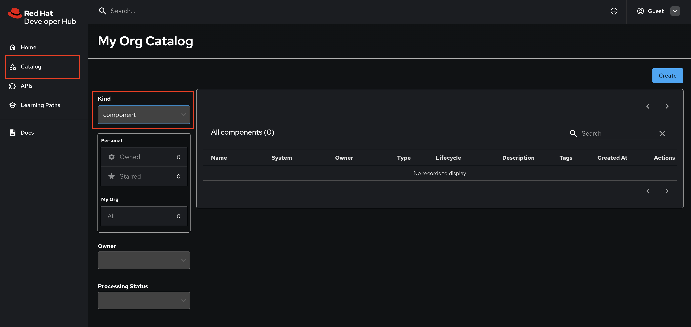
Activity: Synchronize User & Group Entities
In module 2.1, you learned that the Software Catalog contains Entities, and saw a sample appConfig that contained a catalog.locations configuration. That example configuration imported entities from a file located in a hardcoded Git repository. This pattern is known as a static configuration. Red Hat Developer Hub will occasionally poll for updates to the specified file locations and update the Entities in the Software Catalog accordingly
To explore how to represent and synchronize objects from external components in Developer Hub, we are going to add the Identity provider Keycloak.
Keycloak has users and groups already defined. We will use it to authenticate users into Developer Hub and import the associated groups. In our context, groups reflect the user’s team they belongs to. Let’s use the Keycloak plugin to synchronize Users and Groups to Red Hat Developer Hub.
=== Synchronizing Users and Groups to your Software Catalog is important for two reasons. Doing so will enable developers and platform engineers to associate Users and Groups with other Entities in the Software Catalog - very useful for finding out which individual or team is responsible for a particular microservice or database, for example. Secondly, only users who have a corresponding User Entity in the Software Catalog can successfully log in to Red Hat Developer Hub. ===
Enable the Keycloak Plugin
✍️ Time to practise ✍️
-
Open the configuration file. It’s same used to update the title
-
Select Edit > Edit single file.
-
You will find the
backstage-community-plugin-catalog-backend-module-keycloak-dynamicpackage under thedynamic.pluginsfield that is set todisabled: false. This means that this plugin has been enabled in your installation.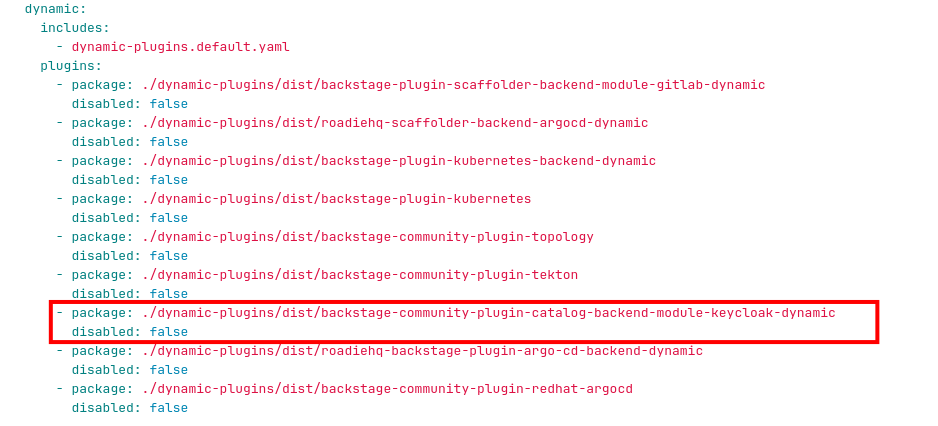
-
Uncomment the
keycloakOrgconfiguration within theappConfig.catalog.providersblock (look for--- KEYCLOAK_CATALOG_PROVIDERS ---, highlight the block, then pressCMD + /orCTRL + /).
|
If the keyboard shortcut to uncomment through the web browser doesn’t , edit the piece of code in your local IDE and paste after ! |
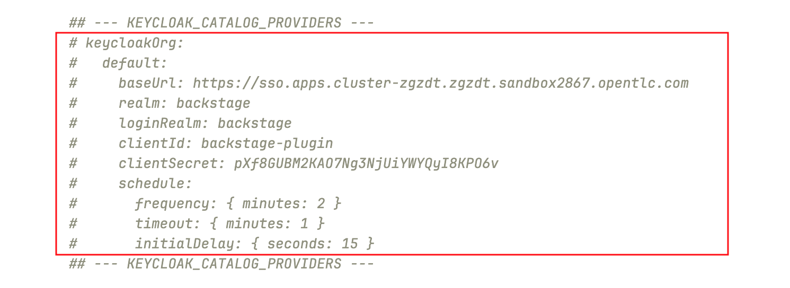
The uncommented piece of code should look like this :
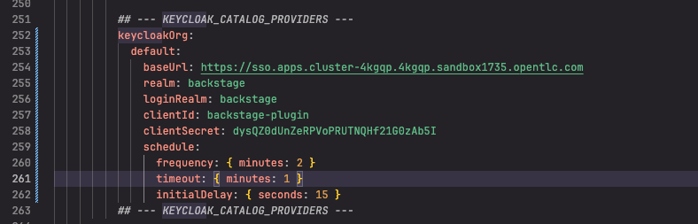
This block of configuration instructs the Keycloak provider to synchronize Users and Groups from the specified Keycloak Realm to the Software Catalog.
-
Scroll down and enter a commit message:
feat: enable the Keycloak catalog provider -
Click the Commit button.
-
Visit the
Developer HubApplication in OpenShift GitOps and click Refresh.If needed, log in using
mon-user-pe/sWtbXGQy.Argo CD has been set up to auto-sync every two minutes. Instead of having to wait for auto-sync to kick in, you are instructed to manually sync the Argo CD application.
Your changes will start to roll out. Confirm this by visiting the rhdh project on OpenShift and checking that a new Pod is being started, or waiting until the Application in OpenShift GitOps reports Healthy instead of Progressing.
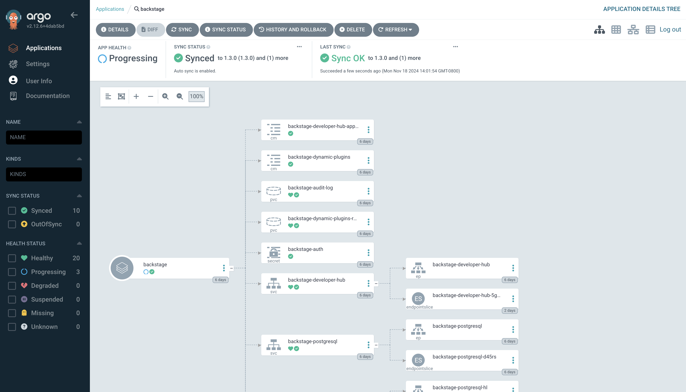
Once the new Pod has started, navigate to OpenShift. If needed, log in as `mon-user-pe``The number of Users and Groups has been read from Keycloak.
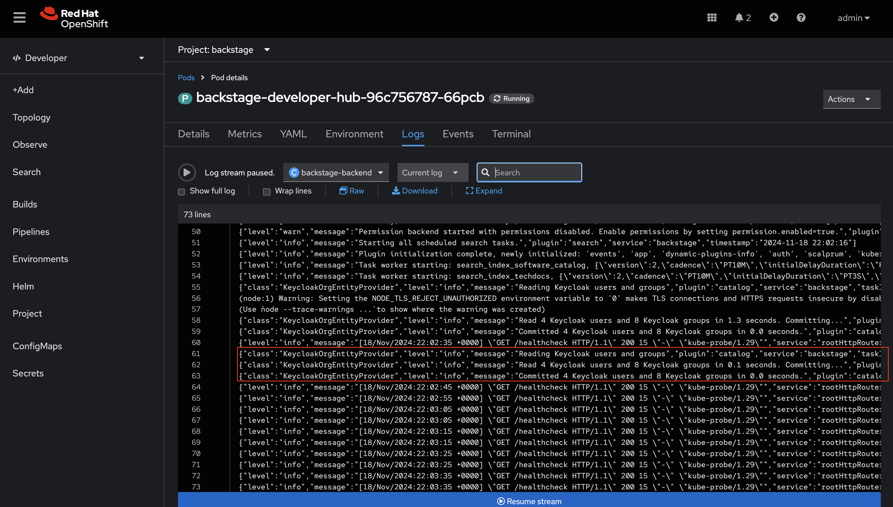
If the pod is running but there is no change on Developer Hub UI, have look here
Debug stuck deployment
The problem is the deployment of Red Hat Developer Hub has been performed on a cluster node different from the initial storage (PVC) location. To fix it, we will trigger a new deployment. To do so, go to backstage project on OpenShift.
-
Search for
replicasin the yaml file -
Set it to 0
-
Click on Save at the left bottom
Automatically, the deployment will be relaunched by OpenShift GitOps !
Congrats, you have fixed the Developer Hub deployment. Come back to your work
You can further confirm that the Users and Groups have been synchronized by visiting the Software Catalog in Red Hat Developer Hub and setting the Kind dropdown to User.
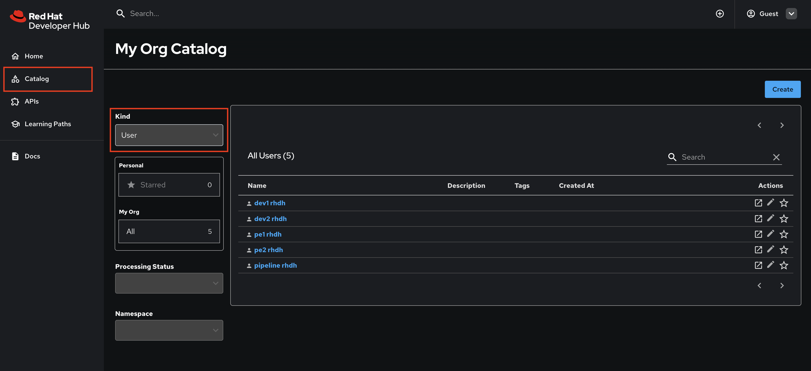
Nice work! You have just enabled a dynamic plugin and configured a catalog provider based on it! :imagesdir: ../../assets/images
Activity: Configure OpenID Connect Authentication
Red Hat Developer Hub supports four authentication providers:
-
Guest (suitable for experimentation and demos only)
-
OpenID Connect
-
GitHub
-
Microsoft Azure
In this activity, you’ll configure an OpenID Connect authentication provider - this will enable developers within your organization to log in using their single sign-on (SSO) credentials.
Configure the OpenID Connect Authentication Provider
-
Visit your developer-hub-config repository on GitLab.
-
Open the values.yaml file, then select Edit > Edit single file.
-
Locate the
appConfig.authobject in the YAML. You can search for--- AUTHENTICATION ---in this file to locate this section. -
Delete the existing
authconfiguration that contains theguestprovider. -
Uncomment the entire
authconfiguration containing theoidcprovider, and thesignInPagesetting below it.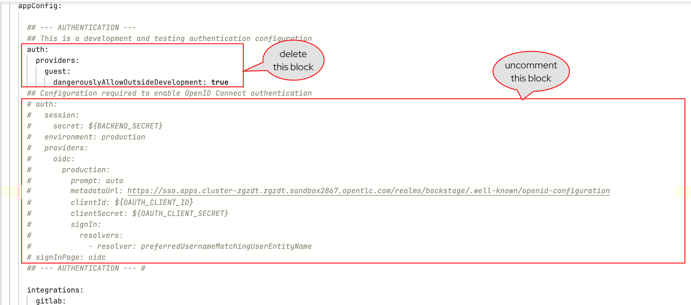
-
The end result will look similar to:
auth: session: secret: ${BACKEND_SECRET} environment: production providers: oidc: production: prompt: auto metadataUrl: https://sso.apps.cluster-fs6v5.fs6v5.sandbox613.opentlc.com/realms/backstage/.well-known/openid-configuration clientId: ${OAUTH_CLIENT_ID} clientSecret: ${OAUTH_CLIENT_SECRET} signIn: resolvers: - resolver: preferredUsernameMatchingUserEntityName signInPage: oidc -
This is an example standard Backstage
authconfiguration. Below is a summary of what this configuration specifies:-
Enable sessions, and use the
BACKEND_SECRETenvironment variable to sign sessions. -
Set the authentication
environmenttoproduction. Environments can have any arbitrary name. -
Enable the OpenID Connect provider (
providers.oidc) with the following configuration:-
Provide a
productionconfiguration (corresponding to theenvironmentdefined previously). -
Use the
backstageRealm (metadataUrl). -
Load the
clientIdandclientSecretfrom environment variables (loaded from the precreated oauth-client Secret, specified inextraEnvVarsSecretsin the values.yaml) -
Map any signing-in user identity to a User Entity in Red Hat Developer Hub using the specified resolver. These Users and Groups have already been synchronised to the catalog due to your work in the prior module.
-
-
The
signInPageproperty is specific to Red Hat Developer Hub. It ensures the correct sign-in UI is rendered. In upstream Backstage, this requires React code changes.
-
-
Commit the changes with a message similar to
feat: enable openid connect -
Click Refresh on the
RHDHApplication in OpenShift GitOps. If prompted, log in asmon-user-pe/sWtbXGQy. -
Choose rhsso as the identity provider
-
Wait until the Application reports being in a Healthy state.
If the application is healthy has started but there is no change on Developer Hub UI
Get help here
Debug stuck deployment
The problem is the deployment of Red Hat Developer Hub has been performed on a cluster node different from the initial storage (PVC) location. To fix it, we will trigger a new deployment. To do so, go to backstage project on OpenShift.
-
Search for
replicasin the yaml file -
Set it to 0
-
Click on Save at the left bottom
Automatically, the deployment will be relaunched by OpenShift GitOps !
Congrats, you have fixed the Developer Hub deployment. Come back to your work
Login using OpenID Connect Authentication
-
Once the latest version of your
appConfighas been synchronized and rolled out, visit your Red Hat Developer Hub instance. You will be prompted to sign in using OpenID Connect.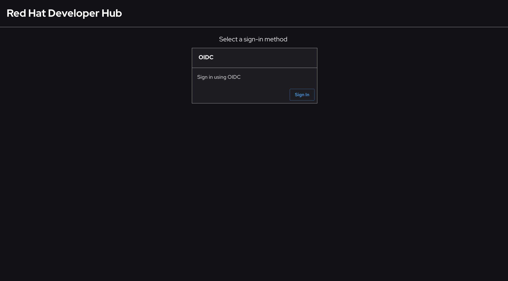
-
Log in using the username
mon-user-peand passwordsWtbXGQyin the pop-up that appears. After logging in, visit the Settings page in Red Hat Developer Hub to confirm you’re logged in as themon-user-peuser.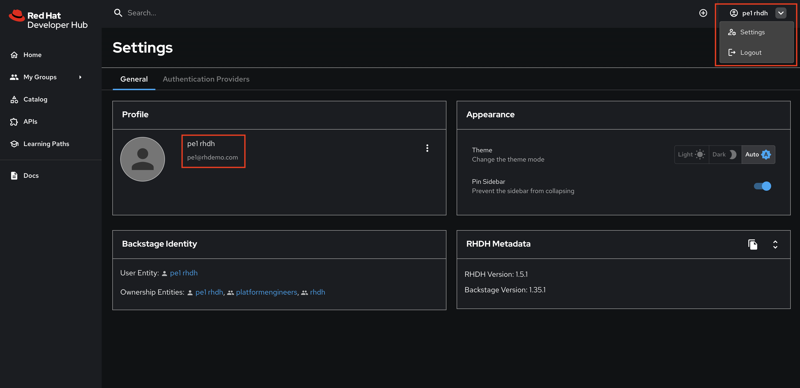
:imagesdir: ../../assets/images
Activity: Enabling GitLab Entity Discovery
Now that the import of User and Group entities and authentication is enabled for those same users, let’s focus on importing more Entities from your Git repositories. Having a rich and complete Software Catalog increases the value of your IDP.
Enable GitLab Entity Discovery
Much like the Keycloak provider, you can use a GitLab provider to discover and import Entities from repositories in GitLab. This functionality is provided by the @backstage/plugin-catalog-backend-module-gitlab plugin. You can see that this is a supported dynamic plugin in the Red Hat Developer Hub documentation.
To install and configure this plugin:
-
Visit the developer-hub-config repository in your GitLab instance.
-
Select Edit > Edit single file.
To uncomment multiple lines of code, highlight the lines and press
CMD + /(on macOS) orCTRL + /(on Linux/Windows). -
Find the
appConfig.catalog.providersconfiguration and uncomment the--- GITLAB_CATALOG_PROVIDER ---block as shown below. -
Commit your changes with the message
feat: add GitLab autodiscovery. -
Click the Refresh button on the
RHDHApplication in OpenShift GitOps (login asmon-user-pe/sWtbXGQy).
Verify GitLab Entity Discovery is Active
-
After a few moments, your new Red Hat Developer Hub configuration will finish rolling out. Check the logs for the new Red Hat Developer Hub Pod. You should see that a repository was discovered - that means the repository contains catalog-info.yaml file.
If the pod is running but there is no change on Developer Hub UI, have look here
Debug stuck deployment
The problem is the deployment of Red Hat Developer Hub has been performed on a cluster node different from the initial storage (PVC) location. To fix it, we will trigger a new deployment. To do so, go to backstage project on OpenShift.
-
Search for
replicasin the yaml file -
Set it to 0
-
Click on Save at the left bottom
Automatically, the deployment will be relaunched by OpenShift GitOps !
Congrats, you have fixed the Developer Hub deployment. Come back to your work
Conclusion
Congratulations! You’ve learned the core concepts of Backstage and Red Hat Developer Hub. You also learned how to deploy and manage an instance of Red Hat Developer Hub using the official Helm Chart via OpenShift GitOps.
Module 3: Software Templates and Developer Experience
Overview
Platform Engineers will often be the authors of Templates, and use them to create "golden paths" that follow best practices and use approved processes and tooling. Templates reduces cognitive load on the development teams by allowing them to focus on development tasks, while platform concerns are addressed by the template.
Module Objectives
-
Create a Template (as the Platform Engineer)
-
Register the Template in the Software (as the Platform Engineer)
-
Create a new Component, GitLab Repository, and GitOps Application from the Template (as a Developer)
Team Organization
Thanks again to the one who set up the Internal Developer Platform for the team. Good Guy ! Now, for the following parts, everyone will lead a part. There are 3 different templates to build and import. Difficulties are the same! (Easy)
| Templates to import have been generated by an AI. We should be careful ;) |
Introduction to Concepts
As mentioned earlier, Templates are defined using YAML and rendered as a rich form in the Red Hat Developer Hub UI when used by development teams. Explore template definition
Let’s explore the Template structure using a sample Template in the rhdh/template-quarkus-simple repository in GitLab.
Template Structure
At a basic level, the Template Entity is similar to the Component Entity you encountered in the catalog-info.yaml in the prior module, resembling a Kubernetes Custom Resource.
apiVersion: scaffolder.backstage.io/v1beta3
kind: Template
metadata:
name: quarkus-web-template
title: Quarkus Service
description: Create a simple microservice using Quarkus with Argo CD
tags:
- recommended
- java
- quarkus
- maven
spec:
owner: rhdh
type: service
# other fields removed for brevityWhere the Template Entity differs is that it contains additional fields. Let’s examine each in more detail:
-
spec.parameters(Parameters) -
spec.steps(Steps) -
spec.output(Output)
Parameters
The spec.parameters field is used by platform engineers to enable developers to pass values (parameters) to the Template. Typically this will be parameters such as the name of the Component, a Java package name, repository name, etc.
Here’s an example of the parameters:
spec:
parameters:
# Parameters can be spread across multiple forms/pages, each
# with their own titles and set of parameters
- title: Provide Information for Application
required:
- component_id
- java_package_name
properties:
component_id:
title: Name
type: string
description: Unique name of the component
default: my-quarkus-app
ui:field: EntityNamePicker
ui:autofocus: true
maxLength: 18
group_id:
title: Group Id
type: string
default: com.redhat.rhdh
description: Maven Group IdThe properties that have a ui prefix might have piqued your interest. These are special properties that provide instructions to the form, for example, to enable autocomplete or autofocus certain form fields when it is displayed in the Red Hat Developer Hub UI.
Steps
Once a developer has entered and confirmed their parameters, the Template is executed by the scaffolder - a service within the Red Hat Developer Hub backend.
The scaffolder executes the actions defined in spec.steps, for example, to publish code to a Git repository and register it in the Software Catalog:
spec:
steps:
- id: publish
name: Publish
# Use the publish action provided by the GitLab plugin
action: publish:gitlab
input:
# Construct a URL to the repository using the provided hostname, logged in
# username, and provided component_id
repoUrl: "${{ parameters.repo.host }}?owner=${{ user.entity.metadata.name }}&repo=${{parameters.component_id}}"
repoVisibility: public
defaultBranch: main
sourcePath: ./${{ user.entity.metadata.name }}-${{parameters.component_id}}
- id: register
name: Register
# Register a new component using the built-in register action
action: catalog:register
input:
repoContentsUrl: ${{ steps.publish.output.repoContentsUrl }}
catalogInfoPath: "/catalog-info.yaml"Notice how the parameters are referenced in the steps. Another point of note is that a user variable is available to access data related to the user who’s using the Template, and subsequent steps can access output from prior steps.
:imagesdir: ../../assets/images
Platform Engineer Activity: Import Entity and Domain
| This is again a Shared part. It means, one person will be able to go through those steps The work accomplished will be useful for everyone ! Feel free to let someone else do this part ! |
-
User1 is : user1
-
User2 is : user2
-
User3 is : user3
Click to learn how to log in as a Platform Engineer
Login as Platform Engineer
You will perform this activity as a Platform Engineer. Please follow the steps below to log out from Red Hat Developer Hub and GitLab, and log back in as a Platform Engineer (mon-user-pe / sWtbXGQy)
-
Logout from Red Hat Developer Hub
-
Sign out of Red Hat Developer Hub from the Profile dropdown as shown in the screenshot below.

-
-
Logout from GitLab
-
Click on the Profile icon, and Sign out from the dropdown as shown in the screenshot below.

-
-
Login back as a Platform Engineer to Red Hat Developer Hub and GitLab using the credentials
mon-user-pe/sWtbXGQy
System and Domain
Objects created will be organized thanks to 2 main concepts. The System and the Domain .
The System is a collection for entities that coorporate to perform some function. For instance, in 3-tier application, the 3 components belong to the same system. It eases their management.
The Domain is a set of System . It encapsulates the systems according to their organizational goal, impact .. this activity is stored in the locations-opencodequest.yaml file in the system-domain repository in GitLab.
Register those objects using the Red Hat Developer Hub UI:
-
Select the
 icon on the top navigation bar to access the Self-service menu.
icon on the top navigation bar to access the Self-service menu.
-
Click the Import an existing Git repository button.
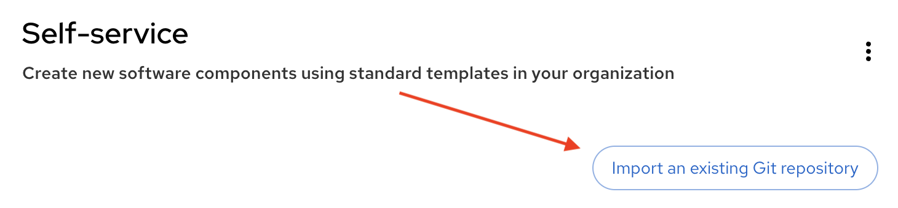
-
Enter the following URL in the Select URL field and click Analyze:
https://gitlab-gitlab.apps.cluster-fs6v5.fs6v5.sandbox613.opentlc.com/peteam1/rhdh-entities/-/blob/main/locations-opencodequest.yaml?ref_type=heads -
You’ll be asked to review the entities being imported, as shown:
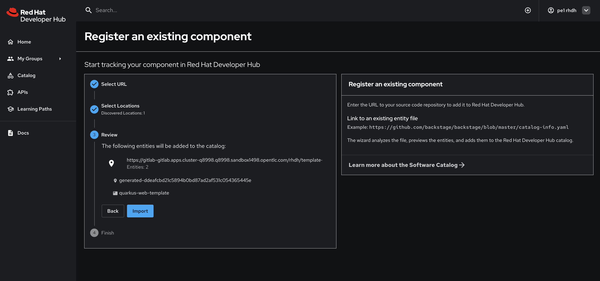
-
Click Import when prompted.
Return to the Catalog section, and set the Kind filter to Domain. Your new opencodequest-team1 domain will be listed. Clicking on the template reveals that it looks a lot like the Component Entity you imported in the previous module.
More information here: https://backstage.io/docs/features/software-catalog/system-model/#domain
+ Click Import when prompted.
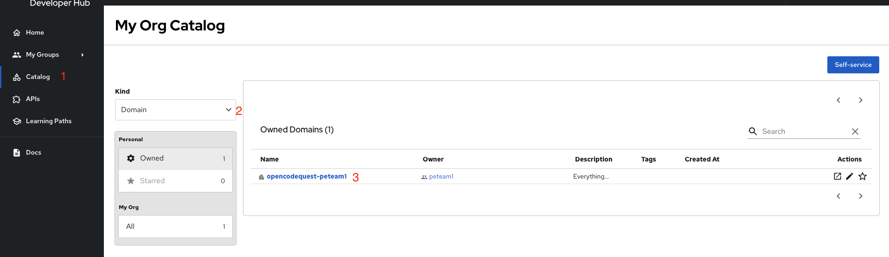
-
Click on Catalog section
-
Set the Kind filter to: Domain
-
Your new Domain should be listed. Return to the Catalog section, and set the Kind filter to System. Your new opencodequest-team1 template will be listed. Clicking on the template reveals that it looks a lot like the Component Entity you imported in the previous module. :imagesdir: ../../assets/images
Team Split
Time to explore platform engineering for everyone !
Now our platform engineering has the additional capabilities such as :
-
Authentication with Keycloak
-
Source code management with GitLab
-
Organization and entities
Your mission is to onboard your developer team to the OpenCode Quest project.
The application
In this workshop, you will develop an application that allows superheroes to fight against villains.
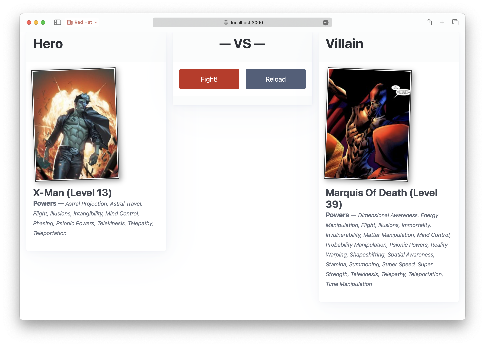
Being a workshop about microservices, you will be developing several microservices communicating synchronously via REST API endpoints:
-
frontend: a web application that allows users to pick up a random superhero, a random villain, and makes them fight. The Super Hero UI invokes the Hero, Villain, and Fight REST endpoints. -
hero-service: a Quarkus microservice that provides CRUD operations on Heroes, which are stored in a PostgreSQL database. -
villain-service: the counterpart of the hero service, for villains. -
fight-service: a microservice that simulates a fight between a hero and a villain. The simulation is done using a Large Language Model (LLM) that is deployed on OpenShift AI/ML Services. The result also includes a short narration of the fight:
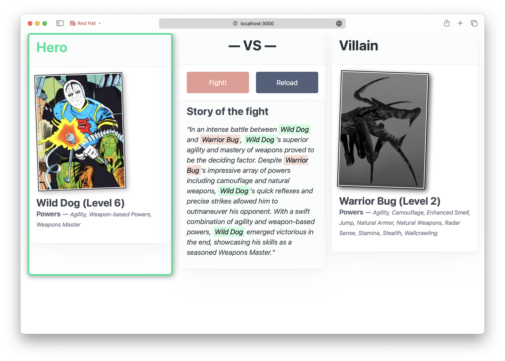
The architecture
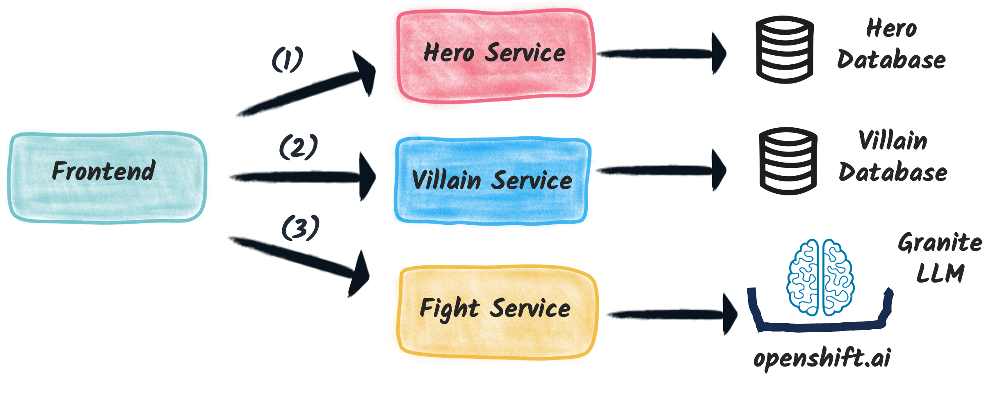
Each team member will create a template following the golden rules of the software template. The template is specific to a stack. A set of tools will also be configured. Yes, you will use the integrations done previously ;)
A template here will have the following structure :
-
Skeleton for the source code repository
-
Source code repository
-
IDE Cloud
-
CI/CD pipeline
-
Container image registry repository
-
GitOps application
USER-1 - Hero microservice
Role switch!
| In this workshop, you will switch between the developer role and the platform engineer role. |
Parts related to the developer role will start with a blue background color.
Parts related to the platform engineer role will start with a red background color.
Click to learn how to log in as a Platform Engineer
Login as Platform Engineer
You will perform this activity as a Platform Engineer. Please follow the steps below to log out from Red Hat Developer Hub and GitLab, and log back in as a Platform Engineer (mon-user-pe / sWtbXGQy)
-
Logout from Red Hat Developer Hub
-
Sign out of Red Hat Developer Hub from the Profile dropdown as shown in the screenshot below.
-
-
Logout from GitLab
-
Click on the Profile icon, and Sign out from the dropdown as shown in the screenshot below.
-
-
Login back as a Platform Engineer to Red Hat Developer Hub and GitLab using the credentials
mon-user-pe/sWtbXGQy
We need a template to create the essential resources to let developers start to contribute quickly :

Here is a grocery list :
-
Create a Gitlab repository with a skeleton depending on the technology stack (runtimes, database …)
-
Pipeline to build and test codes
-
Image registry to store built artefacts
-
GitOps resources to automate deployments
The template should follow the steps to accomplish the creation of the components above.
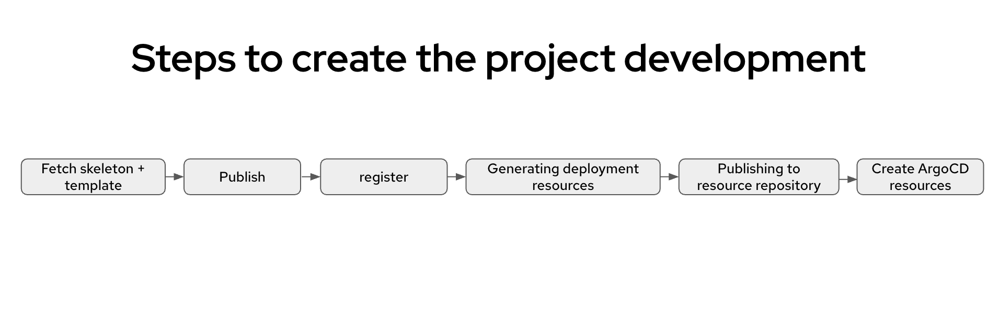
| We have asked our favorite LLM to generate the template for us. We should be careful using it … |
The Software Template you’ll be using in this activity is stored in the template.yaml
Register this template using the Red Hat Developer Hub UI:
-
Login to your instance of Red Hat Developer Hub as the
mon-user-peuser with passwordsWtbXGQy. -
Select the
icon on the top navigation bar to access the Self-service menu. -
Click the Register Existing Component button.
-
Enter the following URL in the Select URL field and click Analyze:
https://gitlab-gitlab.apps.cluster-fs6v5.fs6v5.sandbox613.opentlc.com/peteam1/opencodequest-templates/-/blob/main/scaffolder-templates/quarkus-postgresql/template.yaml?ref_type=heads -
You’ll be asked to review the entities being imported, as shown:
-
Click Import when prompted.
Return to the Catalog section, and set the Kind filter to Template. Your new OpenCodeQuest - Quarkus CRUD microservice template will be listed. Clicking on the template reveals that it looks a lot like the Component Entity you imported in the previous module.
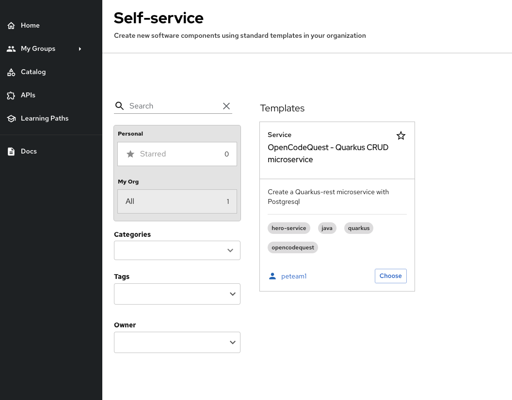
Platform Engineer Activity: Correct a template
Create a new software Component and supporting infrastructure using the OpenCodeQuest - Quarkus CRUD microservice template that was created by the platform engineer.
| This template has been generated by an AI. Use it carefully ;) |
Explore the Template
-
Access Red Hat Developer Hub.
-
Click the Create icon (plus symbol) in the top menu.
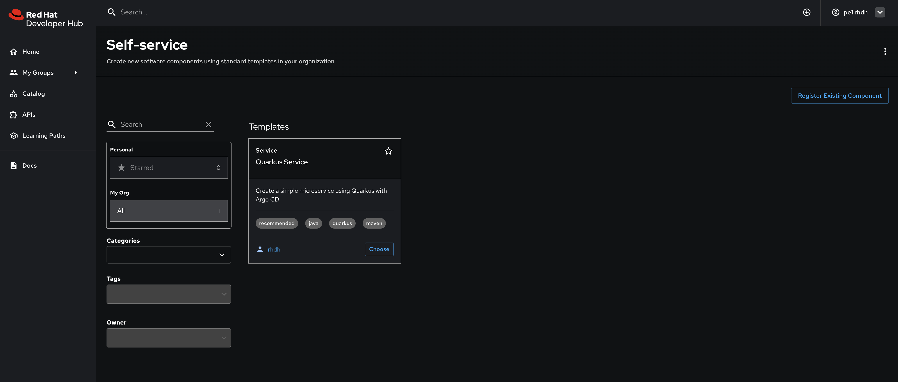
-
Click the Choose button on the OpenCodeQuest - Quarkus CRUD microservice. The Template parameters collection screen will be displayed.
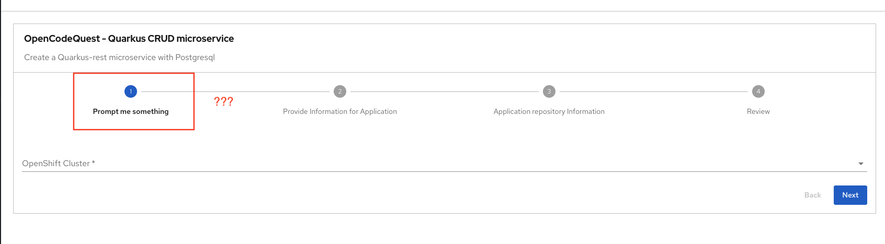
-
Oups! This is a template generated by an amazing over-trained AI model.. Hopefully, you are smart enough to correct the work done by the dummy AI!
-
In Step 1, "Prompt me something". Yes, it’s not relevant at all
-
OpenShift version is not useful to onboard a developer. You should modify the template
-
Update the Template with a human touch!
-
Click on the 3 dots button as shown in the picture.
Remember, Templates imported previously are located in GitLab. We will directly edit it and commit it!
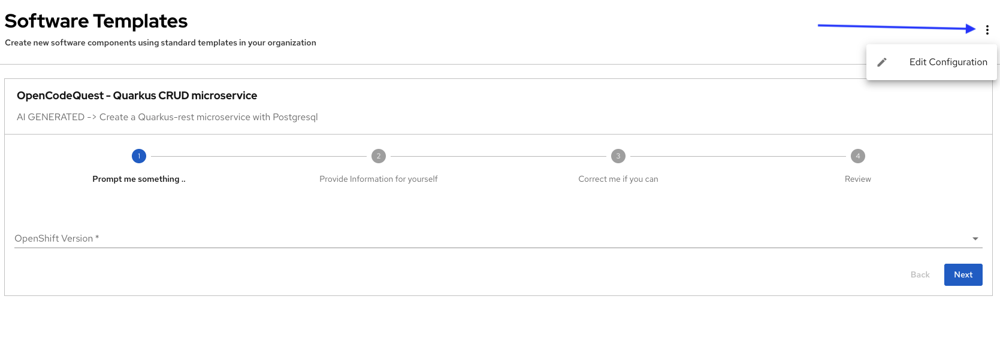
Update the title of the input form
Ajouter double # pour délimiter les sessions
-
Find the YAML surrounded by
update the title belowand replace the title.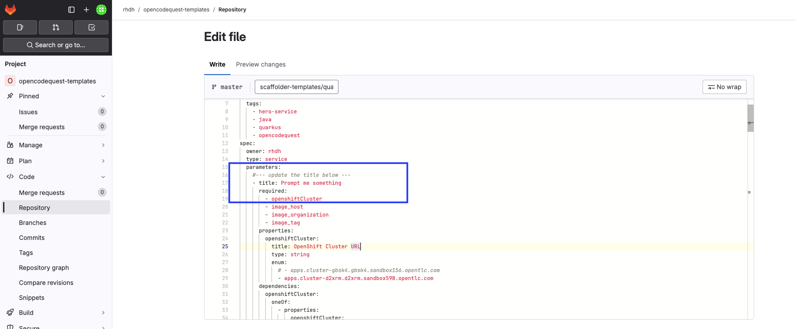
*Prompt me something* by *OpenShift Cluster URL*
-
Scroll down and enter a commit message
feat: change application title. -
Click the Commit changes button.
Refresh the template updated
Templates are refreshed asynchronously by Developer Hub. We will see how to refresh it manually.
Summary
Nice work! You have created a new Component and have associated source code from a Software Template.
Let’s test it!
Platform Engineer Activity: Instantiate the template corrected
Please make sure you are logged in as a Platform Engineer with mon-user-pe / sWtbXGQy as you were guided to in the previous step. We advise you to use a private/incognito window to log out properly!
|
Create a new software Component and supporting infrastructure using the OpenCodeQuest - Quarkus CRUD microservice template that was created by the platform engineer:
Run the Template
Remember, we need the following steps to start the project :
Now the form has been fixed, it should easy-peasy!
-
Access Red Hat Developer Hub.
-
Click the Create icon (plus symbol) in the top menu.
-
Click the Choose button on the OpenCodeQuest - Quarkus CRUD microservice. The Template parameters collection screen will be displayed.
-
In Step 1, set the right OpenShift Cluster and let the default variables
-
In Step 2, you’ll be prompted to enter a set of application parameters and choose the System" and the "entity". Thankfully, application parameters are set.
-
Pick the right System according to your team team1. In our example, the team is team1
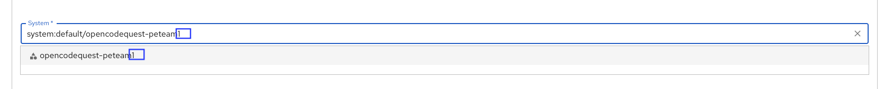
-
You can simply click Next.
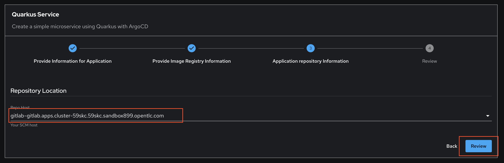
-
In Step 3, select the default Repository Location. In this case, we just have GitLab available, so you can’t change this.
Your username is automatically determined by the Template using your current session. -
Click Review.
-
Confirm you’re satisfied with your parameters and click Create. These will be passed to the scaffolder when it runs the steps defined in the template.
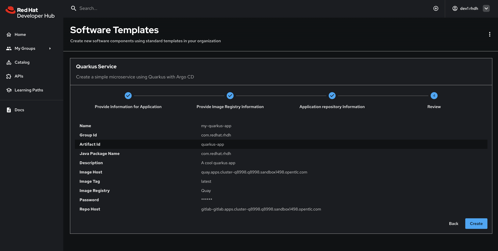
After a few moments, the process should be finished, and you’ll see a screen with a series of green checkmarks.
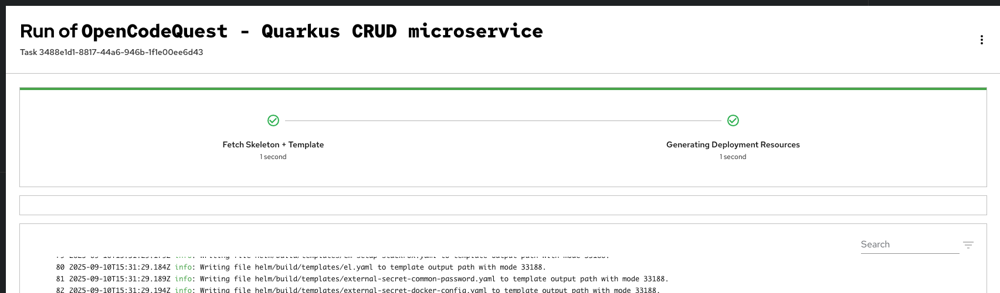
Oupsi! Something is missing!
Our template execution looks empty !
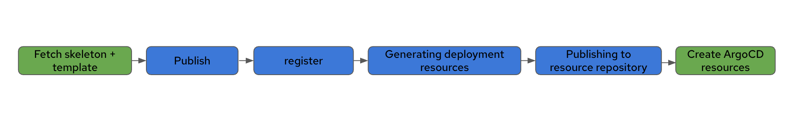
Yes, blue steps are missing! You can suspect that ChatGPT made some errors. It’s the opportunity to explore how steps are defined in the template and fix it!
Platform Engineer Activity: Add steps to the template
Find the template to edit!
Log as a Platform Engineer
Login as Platform Engineer
You will perform this activity as a Platform Engineer. Please follow the steps below to log out from Red Hat Developer Hub and GitLab, and log back in as a Platform Engineer (mon-user-pe / sWtbXGQy)
-
Logout from Red Hat Developer Hub
-
Sign out of Red Hat Developer Hub from the Profile dropdown as shown in the screenshot below.
-
-
Logout from GitLab
-
Click on the Profile icon, and Sign out from the dropdown as shown in the screenshot below.
-
-
Login back as a Platform Engineer to Red Hat Developer Hub and GitLab using the credentials
mon-user-pe/sWtbXGQy
As we did to edit the template previously to correct a title, we will do it again! This flow is a new part of the development lifecycle. The platform engineer shares the knowledge about project development onboarding with developers!
-
Access Red Hat Developer Hub.
-
Click the Create icon (plus symbol) in the top menu.
-
Click the Choose button on the OpenCodeQuest - Quarkus CRUD microservice. The Template parameters collection screen will be displayed.
-
Click on the 3 dots button as shown in the picture.
Remember, Templates imported previously are located in GitLab. We will edit it and commit it inside Gitlab!
Mind the step!
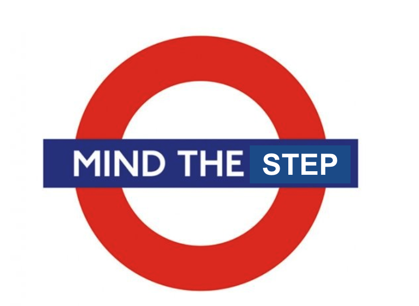
Explore steps definition
Our template mission is to onboard a developer with the right resources to start inside a GitLab repo and deploy their work seamlessly. Accomplish low-value tasks for the developers on behalf of the ops team in the right way.
Remember, the platform engineering helps developers to integrate development tools configured seamlessly in a project. To do so, we rely on plugins to do the job. it proposes a set of actions
Gitlab step definition
For instance, to create a simple GitLab repository, we use the concept of action
- id: publish
name: Publish
action: publish:gitlab
input:
repoUrl: "${{ parameters.repo.host }}.${{ parameters.openshiftCluster }}?owner=${{ user.entity.metadata.name }}&repo=${{parameters.component_id}}"
repoVisibility: publicThe repoUrl is built with information set in the form. The repository will be created within Gitlab user space user.entity.metadata.name, and the repository name will be component_id set in the Java Package Information section.
Explore the Software Catalog AKA catalog-info.yaml
As platform engineering is the entry point for project developments, getting the right overview of objects created and integrations performed is paramount! This is why the Software Catalog exists! A clear definition of UI elements based on the external tools involved in the development project. For instance, pipeline status, source code repositories, registry shortcuts …
- id: register
name: Register
action: catalog:register
input:
repoContentsUrl: ${{ steps.publish.output.repoContentsUrl }}
catalogInfoPath: "/catalog-info.yaml"The template creates a Software Catalog thanks to this action in the git repository where your project will live. It will be updatable by developers. We will see how later .. Check the content here : → template.yaml.
Uncomment the steps!
-
Find the YAML surrounded by
Gitlab Stepsand uncomment below.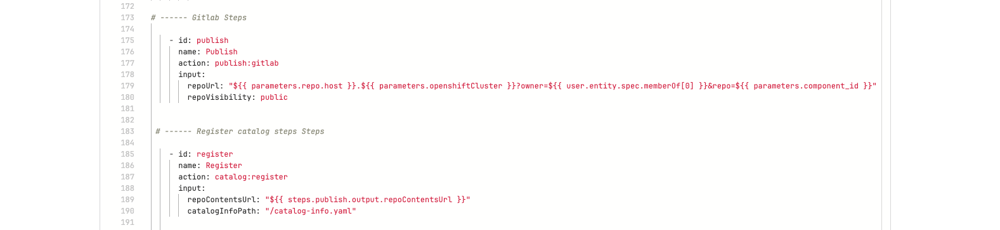
-
Find the YAML surrounded by
publish gitops resourcesandcreate argoCD resourcesand uncomment below. -
Scroll down and enter a commit message
uncomment steps. -
Click the Commit changes button.
Refresh the template updated
Templates are refreshed asynchronously by Red Hat Developer Hub. We will see how to refresh it manually.
Let’s find the template to refresh !
-
Step 1 - Click on Catalog
-
Step 2 - Select Template type
-
Step 3 - Choose the template OpenCodeQuest - Quarkus CRUD microservice to refresh
Let’s refresh the template !
-
Click on circle arrows
Developer Activity: Instantiate the template
Please make sure you are logged in as a Developer with mon-user-dev / sWtbXGQy as you were guided to in the previous step. We advise you to use a private/incognito window to log out properly!
|
Create a new software Component and supporting infrastructure using the OpenCodeQuest - Quarkus CRUD microservice template that was created by the platform engineer:
We will create the hero service from a Developer Hub template. It will instantiate the following tools for the project :
-
Gitlab repositiory
-
IDE Cloud with toolkit and runtimes
-
Building pipelines
-
Container image repository
-
GitOps flows
Run the Template
-
Access Red Hat Developer Hub.
-
Click the Create icon (plus symbol) in the top menu.
-
Click the Choose button on the OpenCodeQuest - Quarkus CRUD microservice. The Template parameters collection screen will be displayed.
-
In Step 1, set the right OpenShift Cluster and let the default variables
-
In Step 2, you’ll be prompted to enter a set of application parameters and choose the System" and the "entity". Thankfully, application parameters are set.
-
Pick the right System according to your team team1. In our example, the team is team1
-
Pick the right Owner according to your team team1. In our example, the team is team1
-
You can simply click Next.
-
In Step 3, select the default Repository Location. In this case, we just have GitLab available, so you can’t change this.
Your username is automatically determined by the Template using your current session. -
Click Review.
-
Confirm you’re satisfied with your parameters and click Create. These will be passed to the scaffolder when it runs the steps defined in the template.
After a few moments, the process should be finished, and you’ll see a screen with a series of green checkmarks.
Developer Activity: Welcome on board in "Première Classe" - Drink your own champagne!
Please make sure you are logged in as a Developer with mon-user-dev / sWtbXGQy as you were guided to in the previous step. We advise you to use a private/incognito window to log out properly!
|